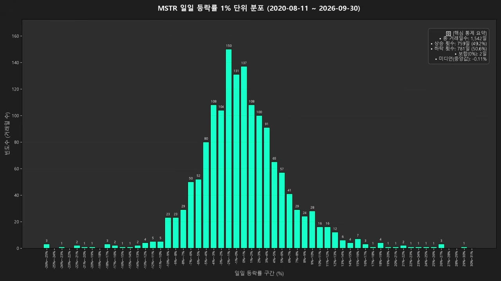
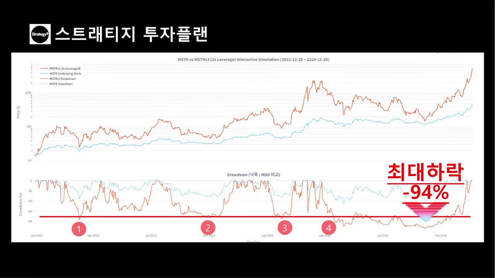
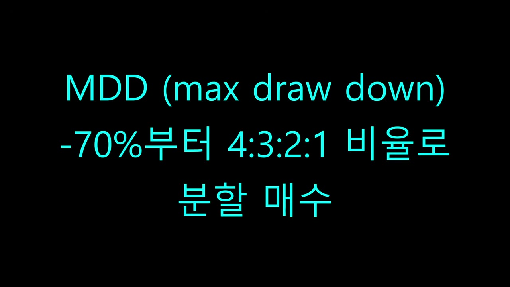

MSTR 3배 레버리지, 수익률417배, MDD 매매전략, 청산리스크 0.2%
- 채널: 스트래티지 투자플랜 · 업로드 2026-10-03 · 4:53
- URL: https://www.youtube.com/watch?v=Ph59sNwlEtY
- 키워드: MSTR, 3배 레버리지, MSTU, 백테스트, MDD, 청산 리스크, 일간 변동성 분포, 분할매수
- Research Level: 1
- ※ 매매 권유 아님 (채널 의견·가상 백테스트 요약)
스트래티지 투자플랜 · 2026-10-03 · 비트코인·크립토
{
"id": "Ph59sNwlEtY",
"url": "https://www.youtube.com/watch?v=Ph59sNwlEtY",
"title": "MSTR 3배 레버리지, 수익률417배, MDD 매매전략, 청산리스크 0.2%",
"channel": "스트래티지 투자플랜",
"upload_date": "2026-10-03",
"duration": "4:53",
"fetched_at": "2026-10-04T11:42:58+09:00",
"fetch_path": "captions",
"transcript_whisper": {
"model": "faster-whisper large-v3-turbo (float32, cpu)",
"runtime_sec": 77.5,
"created_at": "2026-10-04T13:58:00+09:00",
"file": "transcript_whisper.txt"
},
"caption_track": "auto",
"caption_lang": "ko-orig",
"caption_file": "Ph59sNwlEtY.ko-orig.vtt",
"topic": "investing-crypto",
"tags": [
"MSTR·트레저리",
"레버리지·매매법"
],
"routing": "pending",
"raw_files": [
{
"file": "meta.json",
"label": "출처 정보"
},
{
"file": "transcript_clean.txt",
"label": "자막 교정본"
},
{
"file": "transcript_ts.txt",
"label": "타임스탬프 자막"
},
{
"file": "transcript.txt",
"label": "자막 원문"
},
{
"file": "transcript_whisper.txt",
"label": "Whisper 전사"
},
{
"file": "img/0215_daily-vol-dist.jpg",
"label": "이미지"
},
{
"file": "img/0340_mdd-chart.jpg",
"label": "이미지"
},
{
"file": "img/0350_mdd70-split.jpg",
"label": "이미지"
}
],
"references": [],
"related": [
{
"type": "library",
"id": "qHsGOnr5bRw",
"title": "MSTR 주가 여기까지 상승한다! 신규 mNAV 기반, 주가 시뮬레이션",
"via": "mentioned in this item"
}
],
"visibility": "public"
}저장 바닥부터 최고점까지 41,718%입니다. 하루 폭락이 33%를 넘어가면서 펀드 자체가 첨산당했습니다. 1542일 중에서 3일이면 대략 0.2% 2% 확률입니다. MDD -70% 지정부터 4대, 3대, 2대 1 비율로 스웨티지 투자 플랜입니다. 이번 주제는 MSTR 세배 레버리지입니다. 솔직히 제 개인적으로는 세배 레버리지까지 매수할 생각은 없지만 물어보시는 분이 있어서 분석을 해 봤습니다. 우선 지난 윈터장 바닥부터 최고점까지 기준입니다. 날짜로는 2022년 12월 29일부터 2024년 11월 20일까지입니다. MSTR은 13.7달러로 시작해서 종가 기준 최대 473.8달러까지 갔었습니다. 수익률은 3,368%입니다. 가상의 MSTR 세배 레버리지는 동일하게 13.7달러에서 시작을 해서 최대 5,713.7달러까지 7달러까지 갔습니다. 수익률은 41,718%입니다. 두 배 레버리지가 26,164%까지 갔던 것에 비해 세배 레버리지임에도 생각보다 많이 오르지 못했습니다. 이유는 아시다시피 상승 구간에서 예상보다 큰 폭락이 있다 보니 기초 자산을 따라잡는데 시간도 걸리고 시간이 부족하니 수익률이 줄어든 영향입니다. 수익률 기준으로는 417배면 당연히 놀라운 성과이긴 하지만 저한테는 크게 가문이 없습니다. 왜냐하면 청산 리스크가 상대적으로 높기 때문입니다. 예전에 어떤 유튜버가 아이온 세배 레버리지를 70만 원으로 시작해서 수억원 때까지 불렸으나 젠슨 황이 양자 컴퓨터는 아직시기 상조담 말 한마디에 하루 폭락이 33%를 넘어가면서 펀드 자체가 첨산당했습니다. 원래 영국장에 상장되어 있는 세배 레버리지는 33% 폭락전에 수압 노로버를 통해서 청산 방지 기능이 있긴 했으나 그 당시에는 해당 기능이 발동한 시간조차 없어서 그대로 청상 당했습니다. 해당 유튜버의 와이프가 그냥 70만 원짜리 꿈꿨다 생각해라고 얘기했다고 하지만 평생 트라우마가 있을 겁니다. 제가 이걸 데이터로 보여 드리겠습니다. 이 그래프는 MSTR이 비트코인으로 피버뒤에 1위 변동성 분포입니다. 퍼센트를 기준으로 대략 정규 분포 형태를 띄고 있습니다. 하루 만에 29% 상승했던 적도 있습니다. 반대로 하루 만에 25% 이상 하락했던 적이 3회입니다. 총 거래 일수 154일 중에서 3일이면 대략 0.2% 확률입니다. 만에 하나 0.2% % 확률로 하루만에 33% 폭락이 발생하면 바로 청산이라고 보시면 됩니다. MSTU 같은 경우에 청산을 당하려면 하루 만에 50% 폭락이야 하는데 권유적으로는 지극히 낫다고 봐야 합니다. 청산 리스크 없이 261배 청산 리스크 있고 417배라고 하면 저는 MST를 고를 것 같습니다. 물론 청산 리스크 0.2%지만 2%지만 수익률이 4.170배라고 하면 세배 레버리지를 고를지도 모르겠습니다. 그래도 이번 분석을 해보면서 MSTR 세배 레버리지 투자 전략은 세워봤습니다. 이거는 상승장 3년 전체에 올라타기보다는 상승장 중에서도 저평가 지점에 들어가서 과열 상태에서 빠져나오면 좋겠다는 생각이 들었습니다. 다들 본인만의 저점을 잡는 방법이 있으실 겁니다. 저는 대체로 RSI를 활용해서 저점으로 매수하지만 오늘은 세배 레버리진만큼 맥스드로우다운을 활용해 보겠습니다. 지난 사이클 저점부터 최고점까지 맥스드로우다운 기준으로 -70% 하락 진입이 대략네 번 발생했습니다. 그리고 최대 -94%까지 내려갔던 적도 있습니다. 그래서 투자자 본인 성향이 역초세 매매 성향이시라면 MDD - 70% 지점부터 4대, 3대, 2대, 1 비율로 분할 매수하는 방법이 있습니다. 추세 매매 성향이라면 MDD - 60%를 상향 돌파할 때 매수하는 방법도 있고 혹은 돌파 매매 성향이라면 MSTR이 MDD 0% 즉 전고점을 돌파할 때 MSTR 세배 레버리지를 매수해서 100%에서 500% 사이에서 수익화하고 나오는 방법도 있습니다. 세배 레버리지는 경우의 수도 많고 본인만의 투자 전략 수립이 다양합니다. 그래서 직접 확인해 보시라고 기존 MSTR 레버리지 사이트를 업데이트 하였습니다. 24Y 불 버튼을 누르시면 지난 상승장 바닥에서 탑까지 기간으로 자동 변경됩니다. 그리고 주가 그래프 하단에 MDD 그래프도 추가되었싸우니 확인하시면 되겠습니다. 참고로 국내 증권사는 MST 3콜로션을 제공하지 않습니다. 네버리지 예탁금 3천만 원이 무조건 필요합니다. 이번 영상이 도움되셨다면 구독, 좋아요, 알림 설정 부탁드립니다. 이상 스트레티지 투자 플랜이었습니다.
00:00 | 저장 바닥부터 최고점까지 00:00 | 41,718%입니다. 00:04 | 하루 폭락이 33%를 넘어가면서 펀드 00:04 | 자체가 첨산당했습니다. 1542일 00:09 | 중에서 3일이면 대략 0.2% 2% 00:09 | 확률입니다. MDD -70% 지정부터 00:16 | 4대, 3대, 2대 1 비율로 00:16 | 스웨티지 투자 플랜입니다. [음악] 00:21 | 이번 주제는 MSTR 세배 00:21 | 레버리지입니다. 솔직히 제 00:26 | 개인적으로는 세배 레버리지까지 매수할 00:26 | 생각은 없지만 물어보시는 분이 있어서 00:31 | 분석을 해 봤습니다. 우선 지난 00:31 | 윈터장 바닥부터 최고점까지 00:35 | 기준입니다. [음악] 날짜로는 00:35 | 2022년 12월 29일부터 00:39 | 2024년 11월 20일까지입니다. 00:39 | MSTR은 13.7달러로 시작해서 00:45 | 종가 기준 최대 473.8달러까지 00:45 | 갔었습니다. [음악] 수익률은 00:49 | 3,368%입니다. 00:49 | 가상의 MSTR 세배 레버리지는 00:54 | 동일하게 [음악] 13.7달러에서 00:54 | 시작을 해서 최대 00:57 | 5,713.7달러까지 7달러까지 00:57 | 갔습니다. 수익률은 01:01 | 41,718%입니다. 01:01 | 두 배 레버리지가 26,164%까지 01:07 | 갔던 것에 비해 세배 레버리지임에도 01:07 | 생각보다 많이 오르지 못했습니다. 01:12 | 이유는 아시다시피 상승 구간에서 01:12 | 예상보다 큰 폭락이 있다 보니 기초 01:16 | 자산을 따라잡는데 시간도 걸리고 01:16 | 시간이 부족하니 수익률이 줄어든 01:20 | 영향입니다. 수익률 기준으로는 01:20 | 417배면 당연히 놀라운 성과이긴 01:25 | 하지만 저한테는 크게 가문이 01:25 | 없습니다. 왜냐하면 청산 리스크가 01:30 | 상대적으로 높기 때문입니다. 예전에 01:30 | 어떤 유튜버가 아이온 세배 레버리지를 01:35 | 70만 원으로 시작해서 수억원 때까지 01:35 | 불렸으나 젠슨 황이 양자 컴퓨터는 01:40 | 아직시기 상조담 말 한마디에 하루 01:40 | 폭락이 33%를 넘어가면서 펀드 01:45 | 자체가 첨산당했습니다. 원래 영국장에 01:45 | 상장되어 있는 세배 레버리지는 33% 01:51 | 폭락전에 수압 노로버를 통해서 청산 01:51 | [음악] 방지 기능이 있긴 했으나 그 01:55 | 당시에는 해당 기능이 발동한 시간조차 01:55 | 없어서 그대로 청상 당했습니다. 해당 02:00 | 유튜버의 와이프가 그냥 70만 원짜리 02:00 | 꿈꿨다 생각해라고 얘기했다고 하지만 02:05 | 평생 트라우마가 있을 겁니다. 제가 02:05 | 이걸 데이터로 보여 드리겠습니다.이 02:10 | 그래프는 MSTR이 비트코인으로 02:10 | 피버뒤에 1위 변동성 분포입니다. 02:16 | 퍼센트를 기준으로 대략 정규 분포 02:16 | 형태를 띄고 있습니다. 하루 [음악] 02:20 | 만에 29% 상승했던 적도 있습니다. 02:20 | 반대로 하루 만에 25% 이상 02:26 | 하락했던 적이 3회입니다. 총 거래 02:26 | 일수 154일 중에서 3일이면 대략 02:31 | [음악] 0.2% 확률입니다. 만에 02:31 | 하나 0.2% % 확률로 하루만에 02:37 | 33% 폭락이 발생하면 바로 02:37 | 청산이라고 보시면 됩니다. MSTU 02:42 | 같은 경우에 청산을 당하려면 하루 02:42 | 만에 50% 폭락이야 하는데 02:46 | 권유적으로는 지극히 낫다고 봐야 02:46 | 합니다. 청산 리스크 없이 261배 02:52 | 청산 리스크 있고 417배라고 하면 02:52 | 저는 MST를 고를 것 같습니다. 02:57 | 물론 청산 리스크 0.2%지만 02:57 | 2%지만 수익률이 4.170배라고 03:01 | 하면 세배 레버리지를 고를지도 03:01 | 모르겠습니다. 그래도 이번 분석을 03:05 | 해보면서 MSTR 세배 레버리지 투자 03:05 | 전략은 세워봤습니다. 이거는 상승장 03:10 | 3년 전체에 올라타기보다는 상승장 03:10 | 중에서도 저평가 지점에 들어가서 과열 03:15 | 상태에서 빠져나오면 좋겠다는 생각이 03:15 | 들었습니다. 다들 본인만의 저점을 03:20 | 잡는 방법이 있으실 겁니다. 저는 03:20 | 대체로 RSI를 활용해서 저점으로 03:25 | 매수하지만 오늘은 세배 레버리진만큼 03:25 | 맥스드로우다운을 활용해 보겠습니다. 03:30 | 지난 사이클 저점부터 최고점까지 03:30 | 맥스드로우다운 기준으로 -70% 하락 03:36 | 진입이 대략네 번 발생했습니다. 03:36 | 그리고 최대 -94%까지 03:40 | 내려갔던 적도 있습니다. 그래서 03:40 | 투자자 본인 성향이 역초세 매매 03:44 | 성향이시라면 MDD - 70% 03:44 | 지점부터 4대, 3대, 2대, 1 03:51 | 비율로 분할 매수하는 방법이 03:51 | 있습니다. 추세 매매 성향이라면 03:54 | MDD - 60%를 상향 돌파할 때 03:54 | 매수하는 방법도 있고 혹은 돌파 매매 04:00 | 성향이라면 MSTR이 MDD 0% 04:00 | [음악] 즉 전고점을 돌파할 때 04:05 | MSTR 세배 레버리지를 매수해서 04:05 | 100%에서 500% 사이에서 04:10 | 수익화하고 나오는 방법도 있습니다. 04:10 | 세배 레버리지는 경우의 수도 많고 04:14 | 본인만의 투자 전략 수립이 04:14 | 다양합니다. 그래서 직접 확인해 04:18 | 보시라고 기존 [음악] MSTR 04:18 | 레버리지 사이트를 업데이트 04:22 | 하였습니다. 24Y 불 버튼을 04:22 | 누르시면 지난 상승장 바닥에서 탑까지 04:27 | 기간으로 자동 변경됩니다. 그리고 04:27 | 주가 그래프 하단에 MDD 그래프도 04:32 | 추가되었싸우니 확인하시면 되겠습니다. 04:32 | 참고로 국내 증권사는 MST [음악] 04:37 | 3콜로션을 제공하지 않습니다. 04:37 | 네버리지 예탁금 3천만 원이 무조건 04:42 | [음악] 필요합니다. 이번 영상이 04:42 | 도움되셨다면 구독, 좋아요, 알림 04:46 | 설정 부탁드립니다. 이상 스트레티지 04:46 | [음악] 04:49 | 투자 플랜이었습니다.
저장 바닥부터 최고점까지 41,718%입니다. 하루 폭락이 33%를 넘어가면서 펀드 자체가 첨산당했습니다. 1542일 중에서 3일이면 대략 0.2% 2% 확률입니다. MDD -70% 지정부터 4대, 3대, 2대 1 비율로 스웨티지 투자 플랜입니다. [음악] 이번 주제는 MSTR 세배 레버리지입니다. 솔직히 제 개인적으로는 세배 레버리지까지 매수할 생각은 없지만 물어보시는 분이 있어서 분석을 해 봤습니다. 우선 지난 윈터장 바닥부터 최고점까지 기준입니다. [음악] 날짜로는 2022년 12월 29일부터 2024년 11월 20일까지입니다. MSTR은 13.7달러로 시작해서 종가 기준 최대 473.8달러까지 갔었습니다. [음악] 수익률은 3,368%입니다. 가상의 MSTR 세배 레버리지는 동일하게 [음악] 13.7달러에서 시작을 해서 최대 5,713.7달러까지 7달러까지 갔습니다. 수익률은 41,718%입니다. 두 배 레버리지가 26,164%까지 갔던 것에 비해 세배 레버리지임에도 생각보다 많이 오르지 못했습니다. 이유는 아시다시피 상승 구간에서 예상보다 큰 폭락이 있다 보니 기초 자산을 따라잡는데 시간도 걸리고 시간이 부족하니 수익률이 줄어든 영향입니다. 수익률 기준으로는 417배면 당연히 놀라운 성과이긴 하지만 저한테는 크게 가문이 없습니다. 왜냐하면 청산 리스크가 상대적으로 높기 때문입니다. 예전에 어떤 유튜버가 아이온 세배 레버리지를 70만 원으로 시작해서 수억원 때까지 불렸으나 젠슨 황이 양자 컴퓨터는 아직시기 상조담 말 한마디에 하루 폭락이 33%를 넘어가면서 펀드 자체가 첨산당했습니다. 원래 영국장에 상장되어 있는 세배 레버리지는 33% 폭락전에 수압 노로버를 통해서 청산 [음악] 방지 기능이 있긴 했으나 그 당시에는 해당 기능이 발동한 시간조차 없어서 그대로 청상 당했습니다. 해당 유튜버의 와이프가 그냥 70만 원짜리 꿈꿨다 생각해라고 얘기했다고 하지만 평생 트라우마가 있을 겁니다. 제가 이걸 데이터로 보여 드리겠습니다.이 그래프는 MSTR이 비트코인으로 피버뒤에 1위 변동성 분포입니다. 퍼센트를 기준으로 대략 정규 분포 형태를 띄고 있습니다. 하루 [음악] 만에 29% 상승했던 적도 있습니다. 반대로 하루 만에 25% 이상 하락했던 적이 3회입니다. 총 거래 일수 154일 중에서 3일이면 대략 [음악] 0.2% 확률입니다. 만에 하나 0.2% % 확률로 하루만에 33% 폭락이 발생하면 바로 청산이라고 보시면 됩니다. MSTU 같은 경우에 청산을 당하려면 하루 만에 50% 폭락이야 하는데 권유적으로는 지극히 낫다고 봐야 합니다. 청산 리스크 없이 261배 청산 리스크 있고 417배라고 하면 저는 MST를 고를 것 같습니다. 물론 청산 리스크 0.2%지만 2%지만 수익률이 4.170배라고 하면 세배 레버리지를 고를지도 모르겠습니다. 그래도 이번 분석을 해보면서 MSTR 세배 레버리지 투자 전략은 세워봤습니다. 이거는 상승장 3년 전체에 올라타기보다는 상승장 중에서도 저평가 지점에 들어가서 과열 상태에서 빠져나오면 좋겠다는 생각이 들었습니다. 다들 본인만의 저점을 잡는 방법이 있으실 겁니다. 저는 대체로 RSI를 활용해서 저점으로 매수하지만 오늘은 세배 레버리진만큼 맥스드로우다운을 활용해 보겠습니다. 지난 사이클 저점부터 최고점까지 맥스드로우다운 기준으로 -70% 하락 진입이 대략네 번 발생했습니다. 그리고 최대 -94%까지 내려갔던 적도 있습니다. 그래서 투자자 본인 성향이 역초세 매매 성향이시라면 MDD - 70% 지점부터 4대, 3대, 2대, 1 비율로 분할 매수하는 방법이 있습니다. 추세 매매 성향이라면 MDD - 60%를 상향 돌파할 때 매수하는 방법도 있고 혹은 돌파 매매 성향이라면 MSTR이 MDD 0% [음악] 즉 전고점을 돌파할 때 MSTR 세배 레버리지를 매수해서 100%에서 500% 사이에서 수익화하고 나오는 방법도 있습니다. 세배 레버리지는 경우의 수도 많고 본인만의 투자 전략 수립이 다양합니다. 그래서 직접 확인해 보시라고 기존 [음악] MSTR 레버리지 사이트를 업데이트 하였습니다. 24Y 불 버튼을 누르시면 지난 상승장 바닥에서 탑까지 기간으로 자동 변경됩니다. 그리고 주가 그래프 하단에 MDD 그래프도 추가되었싸우니 확인하시면 되겠습니다. 참고로 국내 증권사는 MST [음악] 3콜로션을 제공하지 않습니다. 네버리지 예탁금 3천만 원이 무조건 [음악] 필요합니다. 이번 영상이 도움되셨다면 구독, 좋아요, 알림 설정 부탁드립니다. 이상 스트레티지 [음악] 투자 플랜이었습니다.
[00:00] 저장 바닥부터 최고점까지 4만1,718%입니다. [00:04] 하루 폭락이 33%를 넘어가면서 펀드 자체가 청산당했습니다. [00:08] 1,542일 중에서 3일이면 대략 0.2% 확률입니다. [00:13] MDD-70% 지점부터 4대, 3대, 2대, 1비율로 스트레티지 투자 플랜입니다. [00:21] 이번 주제는 MSTR 3배 레버리지입니다. [00:24] 솔직히 제 개인적으로는 3배 레버리지까지 매수할 생각은 없지만 [00:29] 물어보시는 분이 있어서 분석을 해봤습니다. [00:32] 우선 지난 윈터장 바닥부터 최고점까지 기준입니다. [00:36] 날짜로는 2022년 12월 29일부터 2024년 11월 20일까지입니다. [00:42] MSTR은 13.7달러로 시작해서 종가기준 최대 473.8달러까지 갔었습니다. [00:48] 수익률은 3,368%입니다. [00:51] 가상의 MSTR 3배 레버리지는 동일하게 13.7달러에서 시작을 해서 [00:57] 최대 5,713.7달러까지 갔습니다. [01:00] 수익률은 4만 1,718%입니다. [01:04] 2배 레버리지가 2만 6,164%까지 갔던 것에 비해 [01:08] 3배 레버리지임에도 생각보다 많이 오르지 못했습니다. [01:11] 이유는 아시다시피 3승 구간에서 예상보다 큰 폭락이 있다 보니 [01:15] 기초자산을 따라잡는데 시간도 걸리고 [01:18] 시간이 부족하니 수익률이 줄어든 영향입니다. [01:21] 수익률 기준으로는 417배면 당연히 놀라운 성과이긴 하지만 [01:25] 저한테는 크게 감흥이 없습니다. [01:28] 왜냐하면 청산 리스크가 상대적으로 높기 때문입니다. [01:31] 예전에 어떤 유튜버가 아이온큐 3배 레버리지를 70만원으로 시작해서 [01:36] 수억원대까지 불렸으나 [01:37] 젠슨황이의 양자컴퓨터는 아직 시기상주다 말 한마디에 [01:41] 하루 폭락이 33%를 넘어가면서 펀드 자체가 청산당했습니다. [01:46] 원래 영국장에 상장되어 있는 3배 레버리지는 33% 폭락 전에 [01:51] 스왑 노로벌을 통해서 청산 방지 기능이 있긴 했으나 [01:55] 그 당시에는 해당 기능이 발동한 시간조차 없어서 그대로 청산당했습니다. [02:00] 해당 유튜버의 와이프가 그냥 70만원짜리 꿈꿨다 생각해 [02:04] 라고 얘기했다고 하지만 평생 트라우마가 있을 겁니다. [02:07] 제가 이걸 데이터로 보여드리겠습니다. [02:10] 이 그래프는 MSTR이 비트코인으로 피버디우의 일일 변동성 분포입니다. [02:15] 0%를 기준으로 대략 정규 분포 형태를 띄고 있습니다. [02:20] 하루 만에 29% 상승했던 적도 있습니다. [02:24] 반대로 하루 만에 25% 이상 하락했던 적이 3회입니다. [02:28] 총 거래일수 1542일 중에서 3일이면 대략 0.2% 확률입니다. [02:34] 만에 하나 0.2% 확률로 하루 만에 33% 폭락이 발생하면 바로 청산이라고 보시면 됩니다. [02:41] MSTU 같은 경우에 청산을 당하려면 하루 만에 50% 폭락이어야 하는데 [02:46] 확률적으로는 지극히 낮다고 봐야 합니다. [02:49] 청산 리스크 없이 261배, 청산 리스크 있고 417배라고 하면 저는 MSTU를 고를 것 같습니다. [02:57] 물론 청산 리스크 0.2%지만 수익률이 4.170배라고 하면 3배 레버리지를 고를지도 모르겠습니다. [03:03] 그래도 이번 분석을 해보면서 MSTR 3배 레버리지 투자 전략은 세워봤습니다. [03:09] 이거는 상승장 3년 전체에 올라타기보다는 상승장 중에서도 저평가 지점에 들어가서 과열 상태에서 빠져나오면 좋겠다는 생각이 들었습니다. [03:18] 다들 본인만의 저점을 잡는 방법이 있으실 겁니다. [03:22] 저는 대체로 RSI를 활용해서 저점으로 매수하지만 오늘은 3배 레버리지인 만큼 맥스 드로우다운을 활용해보겠습니다. [03:29] 지난 사이클 저점부터 최고점까지 맥스 드로우다운 기준으로 마이너스 70% 하락 진입이 대략 4번 발생했습니다. [03:38] 그리고 최대 마이너스 94%까지 내려갔던 적도 있습니다. [03:42] 그래서 투자자 본인 성향이 역추세 매매 성향이시라면 MDD 마이너스 70% 지점부터 4대, 3대, 2대, 1 비율로 분할 매수하는 방법이 있습니다. [03:52] 추세 매매 성향이라면 MDD 마이너스 60%를 상향 돌파할 때 매수하는 방법도 있고 [03:58] 혹은 돌파 매매 성향이라면 MSTR이 MDD 0% 즉 정고점을 돌파할 때 MSTR 3배 레버리지를 매수해서 100%에서 500% 사이에서 수익화하고 나오는 방법도 있습니다. [04:12] 3배 레버리지는 경우일 수도 많고 본인만의 투자 전략 수립이 다양합니다. [04:16] 그래서 직접 확인해보시라고 기존 MSTR 레버리지 사이트를 업데이트하였습니다. [04:22] 24와의 볼 버튼을 누르시면 지난 상승장 바닥에서 탑가지 기간으로 자동 변경됩니다. [04:29] 그리고 주가 그래프 하단에 MDD 그래프도 추가되었사오니 확인하시면 되겠습니다. [04:35] 참고로 국내 증권사는 MST 3콜 옵션을 제공하지 않습니다. [04:39] 레버리지 예탁금 3천만원이 무조건 필요합니다. [04:43] 이번 영상이 도움되셨다면 구독, 좋아요, 알림 설정 부탁드립니다. [04:48] 이상 스트레티지 투자 플랜이었습니다. [04:50] 감사합니다.



Research Level 1
지난 사이클 바닥~고점(2022-12-29 ~ 2024-11-20) 구간에서 가상 MSTR 3배 레버리지 수익률과 청산 리스크를 분석하고, MDD 기반 진입 전략을 제시.